Networking - VPC¶
This document provides an overview of Virtual Private Cloud (VPC) networking concepts and best practices for designing and implementing VPCs in AWS.
VPC Components¶
- Internet Gateway: One by VPC, it allows to connect with the internet.
- Transit Gateway: A way to avoid vpc peering hell, all conections in one place.
- VPC Peering Connections: Connect two vpc using a peering.
- VPN: Private connection between AWS and on-premises over the internet
- CGW: Customer Gateway to connect with AWS
- VGW: AWS side Gateway (Virtual Gateway) to connect the VPN over the internet
- VPN Hub: A VPN in AWS can be a hub to connect all on-premises networks
- DX: Direct connection between on-premises and AWS
- DX Location: Physical place where the connection is made
- Route Table: The rules that a Subnet o VPC componet follows to communicate with others.
- NACL: Stateless, do it have permission to start a communication?
- VPC Endpoint: Connect your resources to AWS Services without internet, DNS should be allow
- Interface Endpont: $, ENI, Most of the services
- Gateway Endpoint: For S3, free
- VPC Flow Logs: Register the IP connections, it can be saved on S3, CloudWatch or Firehose
- NAT Gateway: It has regional option, allow to connect private subnet with other resources.
- NAT Instances: Like NAT Gateway but this is a EC2 Instance
- Bastion Host: Check the private resources using an EC2 instance in a public subnet.
- Security groups: Stateful, to check the permissions between components.
CIDR - IPv4¶
- Classless Inter-Domain Routing - a method for allocating IP addresses
- Used in Security Groups rules and AWS networking in general
- Base IP
- Represents an IP contained in the range:
- XX.XX.XX.XX
- Represents an IP contained in the range:
- Subnet Mask
- Defines how many bits can change in the IP
- Represented as /XX: /0, /24, /32
- Example (take 256.256.256.256 and take the value):
- /8 -> 255.0.0.0
- /9 -> 255.32.0.0
- /16 -> 255.255.0.0
- /21 -> 255.255.248.0
- /22 -> 255.255.252.0
- /23 -> 255.255.254.0
- /24 -> 255.255.255.0
- /32 -> 255.255.255.255
- Public vs Private IP (IPv4)
- Private IP:
- 10.0.0.0 - 10.255.255.255 (10.0.0.0/8)
- 172.16.0.0 - 172.31.255.255 (172.12.0.0/12)
- 192.168.0.0 - 192.168.255.255 (192.168.0.0/16)
- Public IP:
- The rest of IPs
- Private IP:
- Examples:
- 192.168.0.0/30 => 2^2 = 4. 192.168.0.0 - 192.168.0.3 => 255.255.255.251
- 192.168.0.0/28 => 2^4 = 16. 192.168.0.0 - 192.168.0.15 => 255.255.255.240
- 192.168.0.0/20 => 2^12 = 4096. 192.168.0.0 - 192.168.16.0 => 255.255.240.0
- 172.16.0.0/12 => 2^20 = 1,048,576. 172.16.0.0 - 172.31.255.255 => 255.240.0.0
Public vs Private IP (IPv4)¶
- The Internet Assigned Numbers Authoriry (IANA) established certain blocks of IPv4 for the use of private (LAN) and public (Internet) addresses
- Private IP:
- 10.0.0.0/8 → 10.255.255.255
- 172.16.0.0/12 → 172.31.255.255
- /12 -> 255.240.0.0 -> 172.16.0.0 - 172.31.255.255 (sum all and substract one)
- 196.168.0.0/16 → 196.168.255.255
- Public IP: The rest of the IPs
- All new AWS accounts have a a default VPC
- EC2 are launched into the default VPC with public access
- You can create your own VPCs with custom CIDR blocks
- 5 AWS VPC per region (soft-limit)
- Each VPC can have up to 200 subnets (soft-limit)
- Each subnet must reside entirely within one AZ
- Subnets can be public or private
- VPC min size: /28 -> 16 IPs
- VPC max size: /16 -> 65536 IPs
-
AWS reserves 5 IPs per subnet:
- 10.0.0.0 -> Network address
- 10.0.0.1 -> VPC Router
- 10.0.0.2 -> DNS Server
- 10.0.0.3 -> Future use
- 10.0.0.255 -> Broadcast address
-
Exam tip: if you nee 29 IP addresses for EC2 instances:
- You can not choose a subnet /27 (32 IP addresses, 32 - 5 = 27 < 29)
- You can choose /26 (64 IP addresses, 64 - 5 = 59 > 29)
Internet Gateway (IGW)¶
- Allows resources in a VPC connect to the internet
- It scales horizontally and is highly available and redundant
- Must be created separatly from a VPC
- One VPC can only be attached to one IGW and viceversa
- Internet Gateways on their own do not allow internet access
- Route tables must also be edited
- You should check the subnets route tables
- You should add the Internet Gateway to the Subnet Route Table
- Subnets can manage the auto assign IPv4 operations
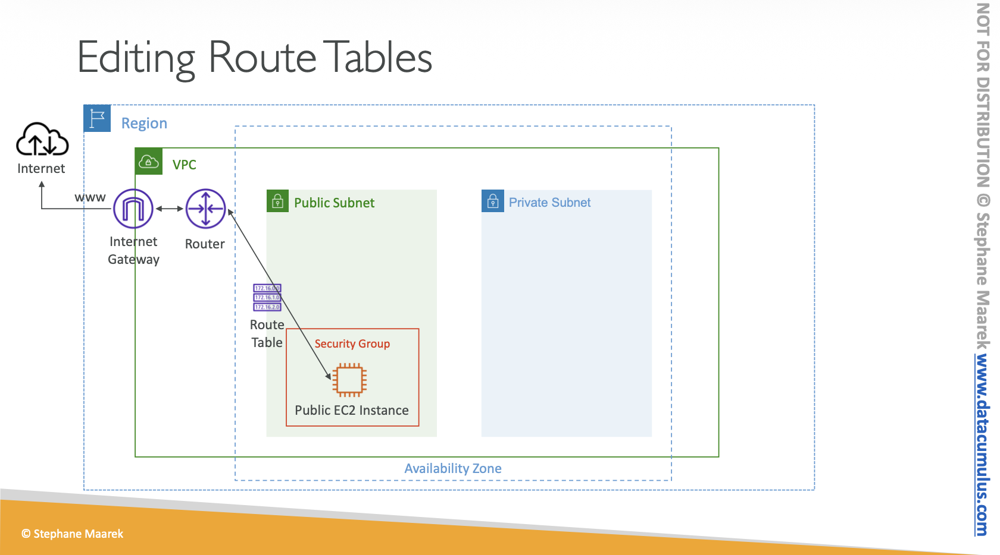
Bastion Host¶
- We can use a Bastion Host to SSH into our private EC2 instance
- A Bastion Host is a special purpose instance that sits in a public subnet
- It is used to securely connect to instances in a private subnet
- The Bastion Host must have a security group that allows SSH access from the internet
- The private instance must have a security group that allows SSH access from the Bastion Host security
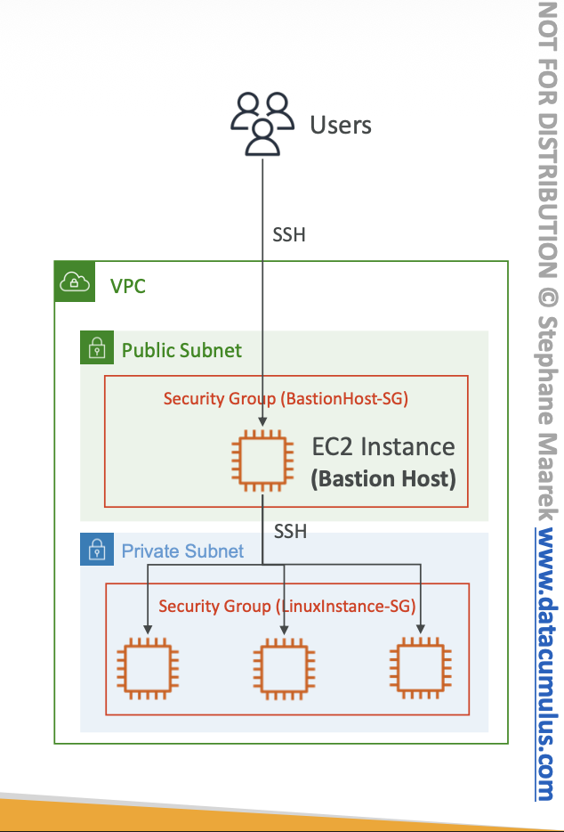
NAT Instance¶
- Network Address Translation
- Used to allow instances in a private subnet to access the internet
- It is an EC2 instance configured to forward traffic to the internet
- It must be launched in a public subnet with a security group that allows inbound traffic from the internet
- Must disable EC2 setting: Source/destination Check
- Route Tables must be configured to route traffic from private subnets to the NAT Instance
- Exist a preconfigured AMIs
- Comments:
- Pre-configured Amazon Linux AMI is available
- Not Highly available/resilient setup out of the box
- You need to create an ASG in multi-AZ + resilient user-data script
- Internet traffic bandwith depends on EC2 instance type
- You must manage Security Groups and rules
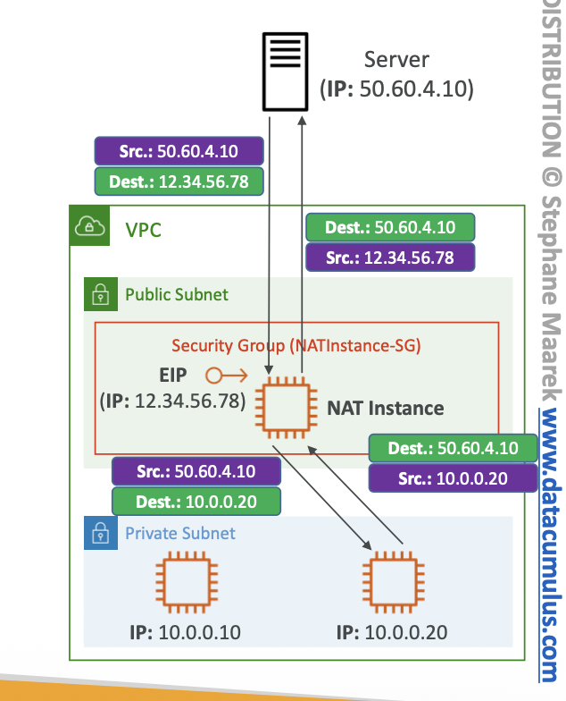
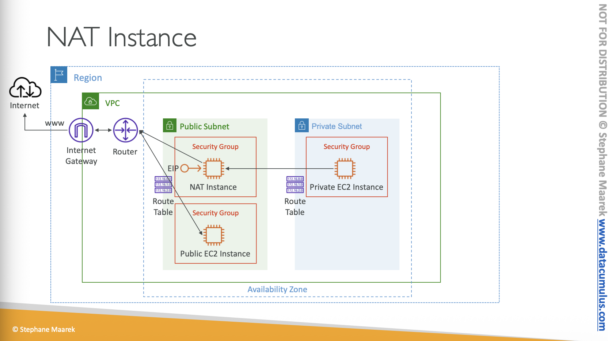
NAT Gateway¶
- AWS-managed NAT, higher bandwidth, high availability, no administration
- Pay per hour for usage and bandwith
- Must be created in a public subnet
- Must be associated with an Elastic IP
- Route Tables must be configured to route traffic from private subnets to the NAT Gateway
- Requires an IGW (Private Subnet => NATGW => IGW)
- 5 Gbps on bandwith with automatic scaling up to 100 Gbps
- Highly available within an AZ
- No Security Groups to manage / required
- Recommended over NAT Instances for most use cases
- There is no cross-AZ failover needed because if an AZ goes down it does not need NAT
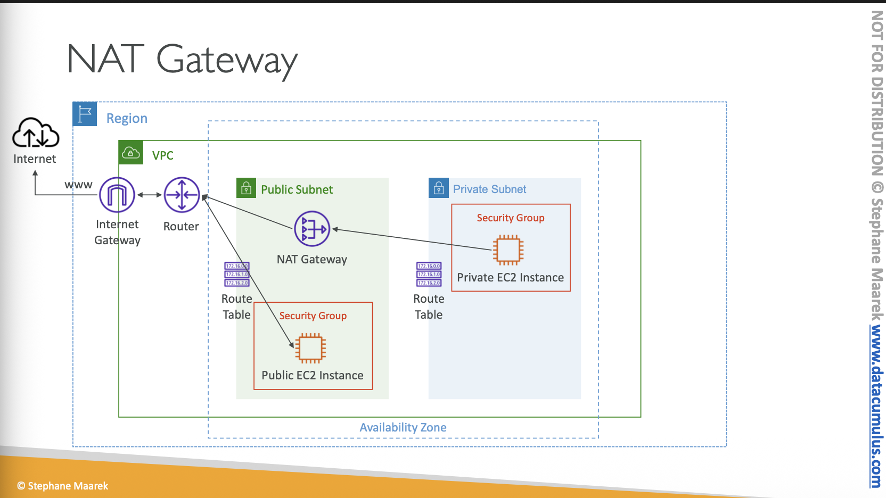
Security Groups and NACLs¶
-
Security Groups
- Act as virtual firewalls for EC2 instances
- Operate at the instance level
- Stateful: return traffic is automatically allowed, no need to create rules
- Allow rules only (no deny rules)
- Can be associated with multiple instances
- Can have multiple security groups associated with a single instance
-
Network Access Control Lists (NACLs):
- NACLs are stateless
- Operate at the subnet level
- Allow and deny rules
- Can be associated with multiple subnets
- Each subnet must be associated with a NACL, if none is specified the default NACL
- Default NACL allows all inbound and outbound traffic
-
Stateful in this context: Allowed traffic
- Stateless in this context: Always evaluate the traffic
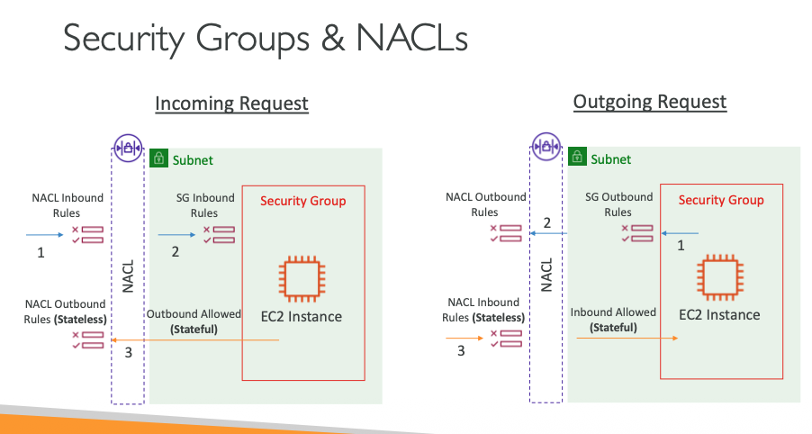
- NACLs
- Are like a firewall which control traffic from and to subnets
- One NACL per subnet, new subnets are ssigned the Default NACL
- You define NACL Rules
- 100 ALLOW
- "*" <- to deny traffic that does not match
- NACL are a great way of blocking a specific IP address at the subnet level
- Do not modify the Default NACL, instead create custom NACL
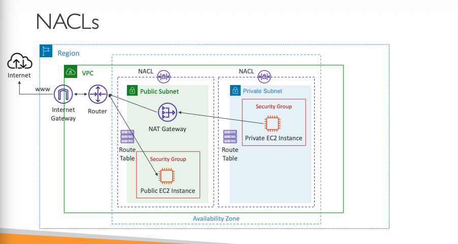
- Ephemeral Ports
- For any two endpoints to establich a connection, they must use port
- Cliente connect to a defined port, and expect a response on an ephemeral port
- Ephemeral ports are temporary ports assigned for the duration of a communication session
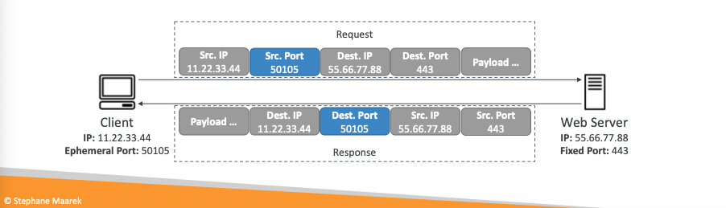
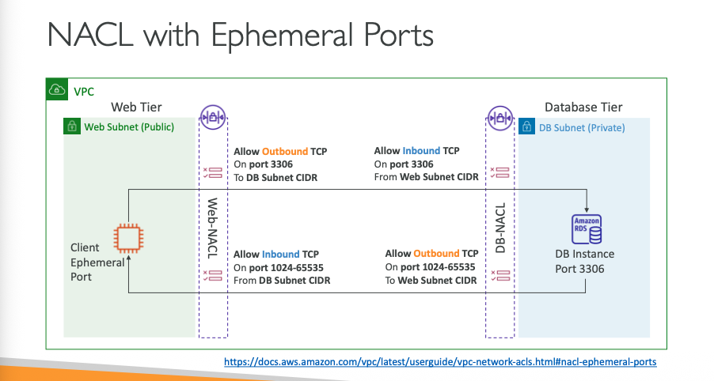
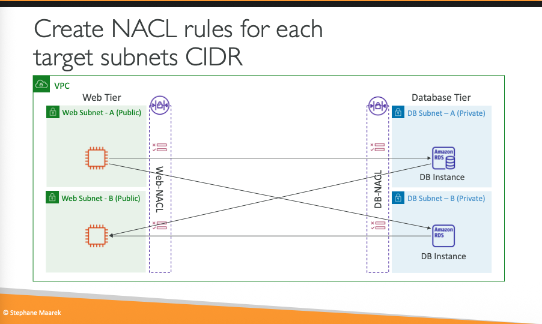
- Differences between Security Groups and NACLs:
- SGs are stateful because they allow the outside communication
- NACLs are stateless because they review the acess control list in every request
- SGa at instance leves vs NACLs at subnet level
- SGs only allow rules vs NACLs allow and deny rules
- SGs are associated with multiple instances vs NACLs are associated with multiple subnets
- Default SG allows all inbound and outbound traffic vs Default NACL allows all inbound and outbound traffic
VPC Peering¶
- Networking connection between two VPCs
- Can be within the same AWS account or different AWS accounts
- VPCs can be in different regions (Inter-Region VPC Peering)
- VPC Peering connection is not trantitive
- No single point of failure or bandwidth bottleneck
- Traffic between peered VPCs stays on the global AWS backbone
- You must update route tables in each VPC to enable routing of traffic between them
- You can not have overlapping CIDR blocks between peered VPCs
- There are no bandwidth limitations
- There are no additional hops, low latency connection
- There is no need for a gateway, VPN connection, or separate physical hardware
- Peered VPCs can communicate using private IP addresses
- You can peer VPCs across different AWS accounts
VPC Peering Hands On¶
- Create two VPCs with non-overlapping CIDR blocks
- Crete the vpc peering
- Update route tables in both VPCs to enable routing between them
- Test the connectivity between instances in both VPCs using private IP addresses
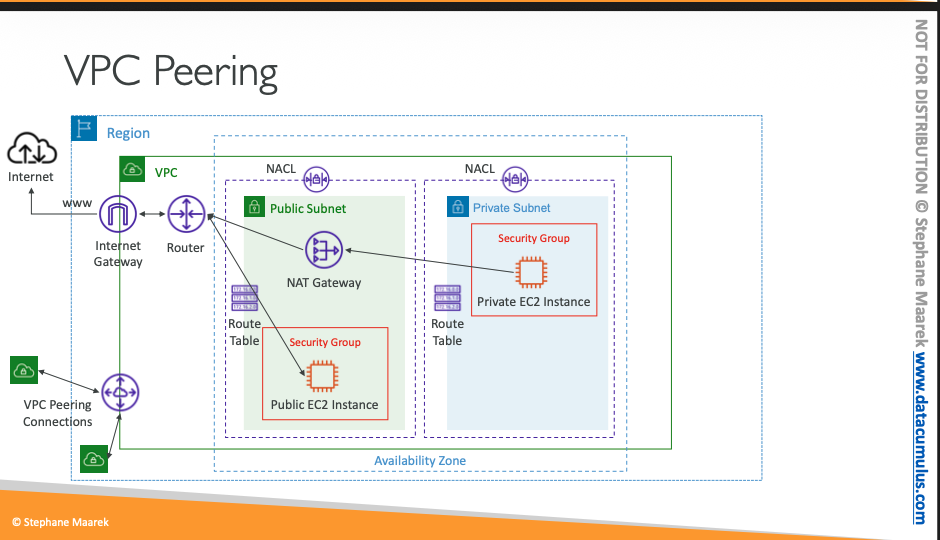
VPC Endpoints¶
- To work with aws services.
- Every AWS service is publicly exposed
- VPC Endpoints allows you to connect to AWS services using a private network.
- Two types of VPC Endpoints:
- Interface Endpoints: Use AWS PrivateLink to connect to services using ENIs
- Gateway Endpoints: Use route tables to connect to services like S3 and DynamoDB
- DNS name should be enabled.
- Associated by subnet and security groups
Interface Endpoints (powered by PrivateLink)¶
- Use AWS PrivateLink to connect to services using ENIs
- Create an elastic network interface (ENI) in your subnet
- Assign private IP addresses from your VPC to the ENI
- Use security groups to control access to the endpoint
- Supports connections to AWS services, third-party services, and your own services
- $ per hour + $ per GB of data processed
Gateway Endpoints¶
- Use route tables to connect to services like S3 and DynamoDB
- Create a gateway endpoint for the service
- Update route tables to direct traffic to the endpoint
- No additional cost for using gateway endpoints
- Supports both S3 and DynamoDB
- Free
Note: Interface Endpoint for S3 is preferred when you require access from your on premises (Site to Site VPN or Direct Connect), a different VPC or a different region.
VPC Flow Logs¶
- Capture information about the IP traffic going to and from network interfaces in your VPC:
- Can be created at the VPC, subnet, or network interface level
- Logs can be published to Amazon CloudWatch Logs or Amazon S3
- Useful for monitoring and troubleshooting network connectivity issues
- Can help with security analysis and compliance auditing
- Can be filtered based on traffic type (accepted, rejected, or all)
- No additional cost for creating VPC Flow Logs, but there are costs for storing and analyzing
- Can be created and deleted without disrupting network traffic
- You can use S3, CloudWatch Logs, and Kinesis Data Firehose
- Captures network information from AWS managed interfaces too:
- ELB
- RDS
- Redshift
- ElastiCache
- WorkSpaces
- NATGW
- TransitGateway
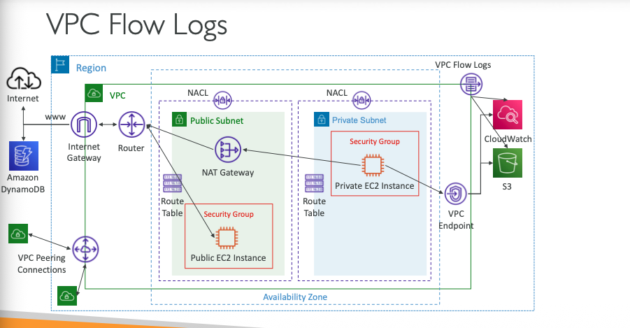
- Structure
- Version
- Account id
- Interface id
- Source Address
- Destination Address
- Source Port
- Destinantio Port
- Protocol
- Packets
- Bytes
- Start
- End
- Action
- Log Status
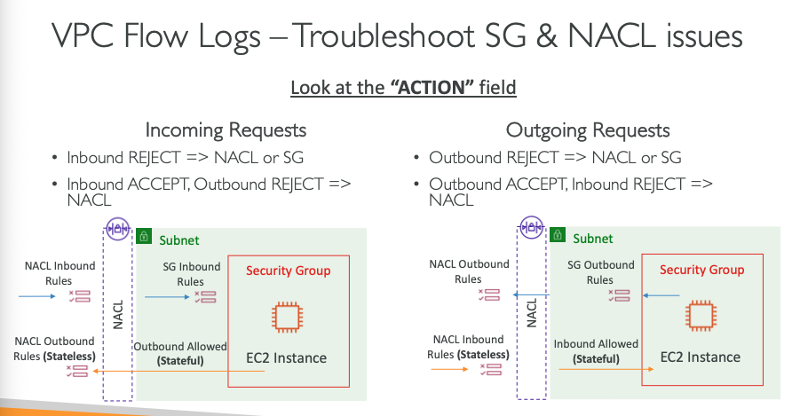
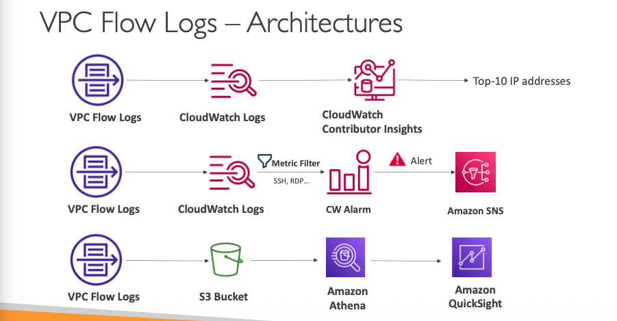
AWS Site-to-Site VPN¶
- Secure connection between on-premises network and AWS VPC over the internet
- Uses IPsec protocol to encrypt data in transit
- Consists of two main components:
- Customer Gateway (CGW): Represents the on-premises gateway device
- Virtual Private Gateway (VGW): Represents the AWS side of the VPN connection
- Supports both static and dynamic routing (BGP)
- Supports multiple VPN tunnels for redundancy and high availability
- Can be used in conjunction with AWS Direct Connect for hybrid connectivity
- Pay-as-you-go pricing model based on connection hours and data transfer
- Supports both policy-based and route-based VPNs
- Can be configured using the AWS Management Console, CLI, or SDKs
- Supports a wide range of customer gateway devices from various vendors
AWS VPN CloudHub¶
- Provide secure communication between multiple sites, if you have multiple VPN connections
- Low-cost hub and-spoke model for primary or secondary network connectivity between different locations (VPN only)
- To set it up, connect multiple VPN connections on the same VGW, setup dynamic routing and configure route tables.
Direct Connect (DX)¶
- Dedicated network connection between on-premises data center and AWS
- Provides a more consistent network experience compared to internet-based connections
- Can be used to connect to all AWS services in a specific region
- Supports speeds ranging from 50 Mbps to 100 Gbps
- Can be used in conjunction with AWS Site-to-Site VPN for hybrid connectivity
- Requires a Direct Connect Gateway to connect to multiple VPCs across different regions
- Pay-as-you-go pricing model based on port hours and data transfer
- Supports link aggregation (LAG) for increased bandwidth and redundancy
- Requires working with an AWS Direct Connect Partner or colocation provider to establish the physical connection
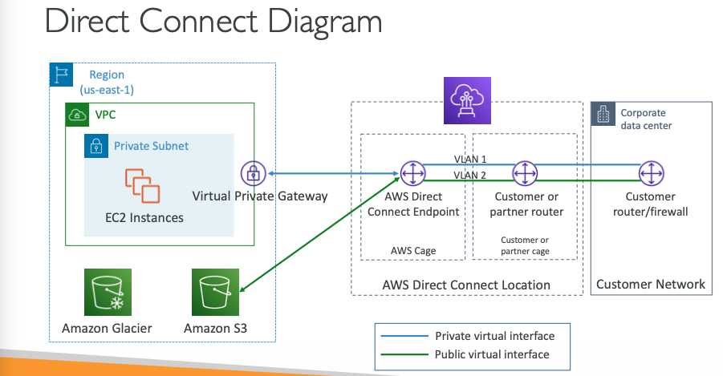
- You can use Direct Connect Gateway to connect one or more VPC in many different regions (same account)
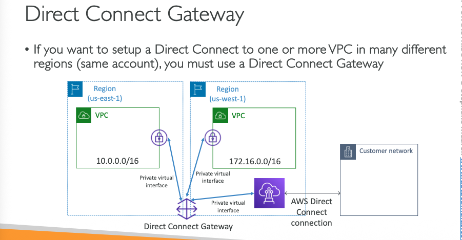
Direct Connect - Connection Types¶
- Dedicated Connection
- Physical Ethernet connection associated with a single customer
- Speeds from 1 Gbps to 100 Gbps
- Hosted Connection:
- Connetion requests are made via AWS Connext Partners
- Speeds from 50 Mbps to 10 Gbps
Encryption¶
- Direct Connect does not provide encryption by default
- You can use MACsec (Media Access Control Security) for encryption on 1 Gbps
- You can also use AWS Site-to-Site VPN over Direct Connect for encryption
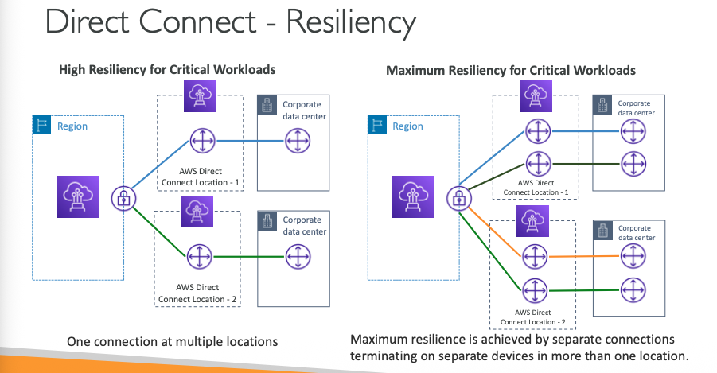
Site-to-Site VPN connection as a backup¶
- You can use a Site-to-Site VPN connection as a backup for your Direct Connect connection
Transit Gateway¶
- Benefits:
- Like a Hub of connections
- Unique service with broadcast properties
- Increase the throughput using ECMP
- Network transit hub that can connect multiple VPCs and on-premises networks
- Simplifies network architecture by consolidating connections
- Supports inter-region peering
- Scales elastically based on network traffic
- Supports multicast traffic
- Centralized management of network connections
- Supports integration with AWS Direct Connect and VPN connections
- Pay-as-you-go pricing model based on data processed and attachments
- ECMP = Equal-cost multi-path
VPC Traffic Mirroring¶
- Allows you to capture and inspect network traffic in your VPC.
- Capture the traffic:
- From (source) - ENI
- To (Targets) - an ENI or a Network Load Balancer
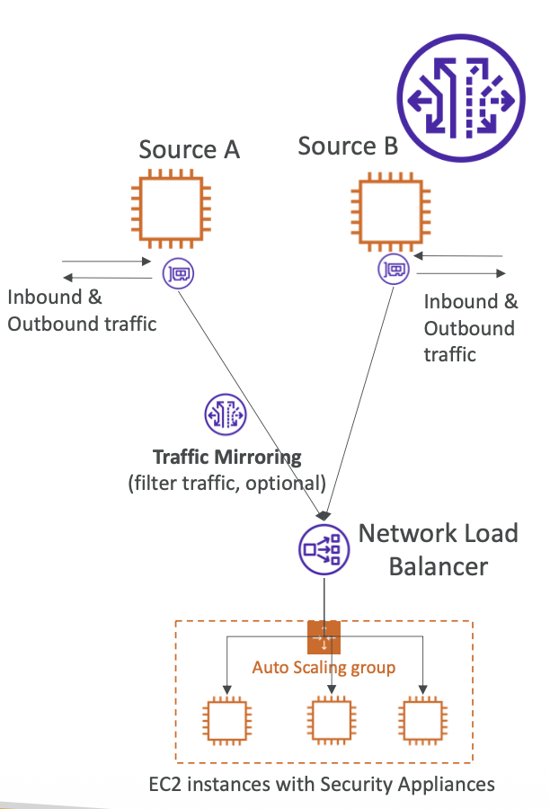
IPV6¶
- Is the succesor of IPv4
- Uses 128-bit addresses, represented in hexadecimal format
- Provides a much larger address space than IPv4
- IPv6 addresses are represented as eight groups of four hexadecimal digits, separated by colons
- Example: 2001:0db8:85a3:0000:0000:8a2e:0370:7334
- IPv6 addresses can be abbreviated by omitting leading zeros and consecutive groups of zeros
- Example: 2001:0db8:85a3::8a2e
Egress Only Internet Gateway¶
- Used for IPv6 only
- Similar to a NAT Gateway but for IPv6
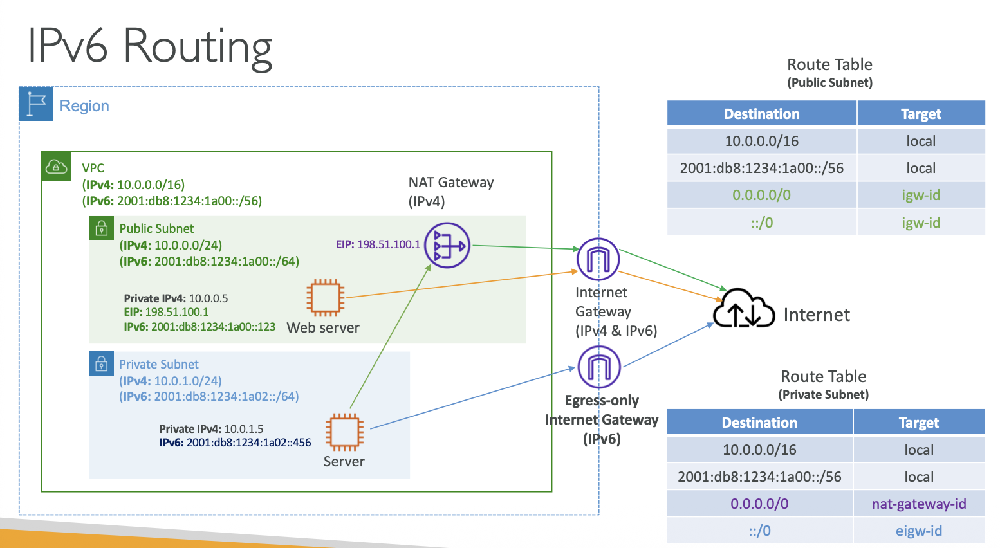
AWS NetworkFirewall¶
- Protect your entire Amazon VPC from layer 3 to layer 7
- Stateful, managed, network firewall and intrusion detection and prevention service for VPCs
- Provides fine-grained control over network traffic
- Supports custom rules and managed rule groups
- Can be deployed in a highly available configuration across multiple Availability Zones
- Pay-as-you-go pricing model based on the number of firewall endpoints and data processed
- Can be used to protect VPCs from common web exploits and vulnerabilities
- Can be used to monitor and log network traffic for security analysis and compliance auditing
VPC Pricing¶
- VPC itself is free, but there are costs associated with using VPC components and features
- Internet Gateway: Free
- NAT Gateway: $0.045 per hour + $0.045 per GB of data
- VPC Endpoints:
- Interface Endpoints: $0.01 per hour + $0.01 per GB of data processed
- Gateway Endpoints: Free
- VPC Flow Logs: Costs for storing and analyzing logs in CloudWatch Logs or S3
- AWS Site-to-Site VPN: $0.05 per hour + data transfer costs
- AWS Direct Connect: Costs based on port hours and data transfer